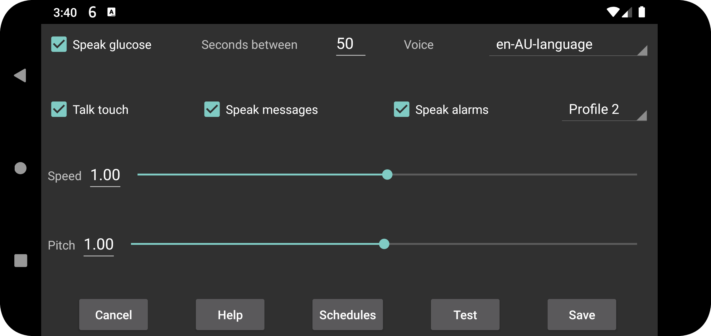

Speaks glucose values when they arrive.
Seconds between: Specifies how many seconds Juggluco should wait before saying the next glucose value. Glucose values are always spoken immediately when they arrive. When a large value is specified, Juggluco will skip glucose values that arrive before this time period has elapsed.
Voice: Selects a speaker out of a list of possible speakers.
Speed: a higher number means faster talking.
Pitch: a higher number means a higher pitch.
Test: speaks out the last glucose value.
On some phones the Android settings for text-to-speech have to be changed for it to work. Sometimes the data of a language has to be installed or the configuration changed. On Samsung phones "Google text-to-speech" has to be set instead of "Samsung text-to-speech engine" in order to choose from different voices. These options can be found by searching for text-to-speech in Android settings or going to Language and input (->Advanced)->Text-to-Speech. Here you can select "Speech Services by Google" and install voice data. In other phones it is under System settings->Accessibility->Vision->Text-to-Speech settings.
When talk touch is switched on, touching at certain places creates talk:
Touching the current glucose;
Touching points of the graphs and scan points;
Touching amounts;
The date of that point of the graph is said, when the upper left and right corners are touched;
Long pressing a menu item;
Long pressing an amount in the list of amounts (left middle menu->list).
Reads text messages, that are temporarily visible on the screen, and the result of scanning (error messages and the glucose value).
Speaks out the glucose level during Low and High glucose alarms. It is read both at the start of the alarm as at the moment the alarm is stopped.
Select which profile is active. Default is the default profile. All settings in left menu → Settings → Alarms and Talk are specific for the active profile.
You can configure Juggluco to activate a profile at a certain time of day.
You can increase or decrease the volume of talk sound in Android settings under sound. If MEDIA is switch off, I can do it on my phone with the Notification sound lever, on my WearOS watch with the System sound lever. It shouldn’t be heard when “Do not disturb” is turned on. When MEDIA is set, the media volume lever is used and on most phones it will be heard during “Do not disturb”
Speak alarms is different. Alarms are spoken with the “Alarms” category when “Alarm is Alarm” is set on. On my phone the volume is regulated with the Alarm-lever, on my watch with the Notification lever.